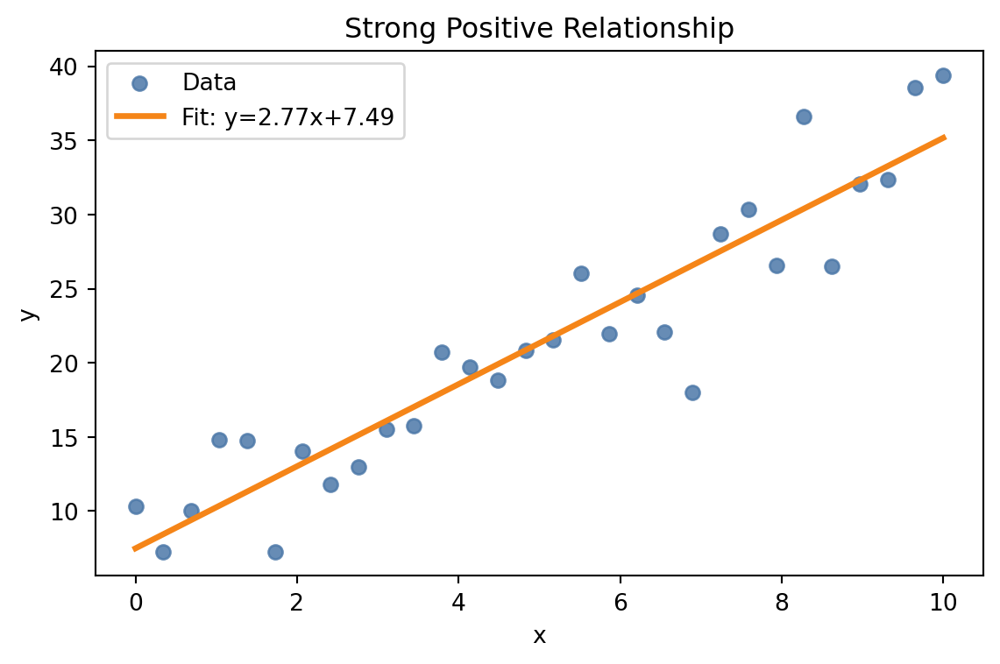

Data (In)sight for All: Multimodal Data Representation
JooYoung Seo
School of Information Sciences, University of Illinois Urbana-Champaign
IS 529 Doctoral ProSem, October 14, 2026
Let’s Think…
What good is a chart you can’t see?
How do you read a chart you can’t see?
Data Viz Divide
A Picture’s Worth…?
For Sighted Users
- Instant insight
- Visual patterns at a glance
- Effortless data comprehension
For Users with Visual Impairments
- Wall of inaccessible data
- Locked door, with valuable information trapped inside
- Barriers to understanding
“Design for Them” Approach
Sighted person to create a chart and then add a separate description as an afterthought
One group produces boundaries while the other group just consumes
One-way street: power imbalance

Shifting to “Design for Us”
“For Them”
- Unidirectional, separate tools, one group dictates
- One-way street
- Exclusionary design approach
“For Us”
- Bidirectional, unified framework, all users collaborate
- Two-way conversation
- Inclusive design approach

Meet {maidr}!
Data Insight for All.
What is {maidr}? 🔎
Multimodal Access and Interactive Data Representation
Decoupling vision-first approach from data interpretation
Encode data representation in multiple modalities
Not a separate, watered-down version for blind users
one unified experience: the same information with preferred modalities
Multimodal Data Representation
On top of visualization:
Touchable (Braille) 🖐️
Readable (Text) 📖
Audible (Sonification) 🎶
Conversable (AI) 💬
Touchable: Feel Data 🖐️
Data shape and trend pattern in Unicode Braille symbols
Users can run their fingers across the data to feel its peaks and valleys
With a refreshable braille display, or as a tactile graph on a Dot Pad or a Monarch
It Feels Like This…

Audible: Listen to Data 🔊
Sonification turns data into audible tones
x-axis value: stereo panning position
y-axis value: pitch
As a trend goes up, a musical pitch rises with it

It Sounds Like This…
Readable: Understand Data 📖
A straightforward text of the plot’s key features
Get a clean, simple summary of what the plot is showing
Conversable: Chat with Data 💬
Powered by AI/LLMs (GPT, Gemini, Claude)
Ask questions and get co-insight of the plot
Natural language data analysis
Example Query Can you summarize the main trend for me?
Beyond Theory: {maidr} in Action!
One Engine, Three Ways In
Python:
import maidrwith Matplotlib, Seaborn, Plotly, or AltairR:
library(maidr)with ggplot2 or base R graphicsAI assistants: the maidr skill for Claude and ChatGPT
Each one hands your plot and its data to the same engine, maidr.js
Keyboard-Toggle Modalities
| Key | Function |
|---|---|
Arrow Keys |
Move around the plot |
B |
Toggle Braille Mode |
T |
Toggle Text Mode |
S |
Toggle Sonification Mode |
D |
Open Plot Description |
Page Up / Page Down |
Switch Layers |
? |
Open Chat AI Mode |
Python: Just Plug In
Python: Multiline Plot
Python: Multiline Plot
Python: Box Plot
Python: Box Plot
{Shiny} + {maidr} integration
# Minimal Shiny-for-Python app structure with MAIDR-ready plots
from shiny import App, ui
# UI with tabs mirroring slides
app_ui = ui.page_fluid( # implement ui.navset_tab with tabs mirroring slides
)
@output
@render_maidr #<<
def create_histogram_output():
ax = ... # build matplotlib/seaborn axes
return ax
app = App(app_ui, server)Source: xability/a11y_dashboard
maidr Shiny Dashboard
The Magic behind the Scenes
![A flowchart of how maidr turns a Matplotlib or Seaborn plot into an accessible one, in three layers. Matplotlib and Seaborn plots go into the Interception Layer, which holds Monkey Patching and, feeding it, a Context Manager. From there an arrow leads down to the Extraction Layer, where a MAIDR Plot Factory feeds a Figure Manager, the Figure Manager feeds MAIDR Plots, and Extractor Mixins feed MAIDR Plots too. The Extraction Layer leads to the Rendering Layer, where a Highlight Context feeds an SVG with MAIDR data. The output of the Rendering Layer is the MAIDR accessible plot.](images/arch.png)
R: One Line
R: One Line
R: Layers
R: Layers
AI: Ask Your Assistant
AI assistants hand you plots as pictures: nothing to hear, touch, or explore
The maidr skill teaches them to make every plot multimodal
It picks Python, R, or JavaScript for you, and checks its own work
For Claude and ChatGPT, and for Codex, Cursor, GitHub Copilot, and Gemini CLI
AI: One-Time Setup
Claude Code:
/plugin marketplace add xability/maidr-skillthen/plugin install maidr@maidr-skillChatGPT.com: Download the ready-made ZIP, then Plugins → Skills → Add → Upload
Claude.ai: upload the same ZIP in Customize → Skills → Add and turn it on
Any coding agent:
npx skills add xability/maidr-skill
AI: Just Ask for a Plot
AI: What Came Back
Claude’s answer, after one follow-up question · Open the live ChatGPT demo (presenter login)
But Does It Work With…?
119,000+ downloads across CRAN, PyPI, and npm
Python: Matplotlib, Seaborn, Plotly, Altair
R: ggplot2, base R graphics
JavaScript: D3, Plotly.js, Vega-Lite, Observable Plot, Chart.js, Highcharts, ECharts, Google Charts, amCharts, AnyChart, ApexCharts, Frappe Charts, uPlot, TradingView Lightweight Charts, React, Recharts, Victory, Nivo, MUI X Charts
BI and Office: Tableau, Power BI, Excel, PowerPoint, Word
Where you work: terminal, Jupyter Notebook, Google Colab, Quarto, Shiny, Streamlit, web pages
AI assistants: agent skill and MCP server, for Claude and ChatGPT
A Future We Build Together
Data Insight for All
Pick your way in:
Learn More & Contribute
Start here: maidr.ai
Python: py.maidr.ai
R: r.maidr.ai
AI skill: github.com/xability/maidr-skill
Source Code: github.com/xability
Acknowledgments
Sponsors
- The National Science Foundation #2348166
- The Institute of Museum and Library Services #RE-254891-OLS-23
- Teach Access Faculty Grant
- The Wallace Foundation Grant and the International Society of the Learning Sciences
- The PI’s faculty startup grant
Contributors
- Saairam Venkatesh
- Sean McCurry
- Yu Jun Yam
- Yilin Xia
- Bongshin Lee
- Daksh Pokar
- Krishna Anandan Ganesan
- Niranjan Kalaiselvan
- Sanchita Kamath
- Omar Khan
- Aziz Zeidieh
- Aarthy Kesavan Padmanaban
- Sujithra Rajan
The Insights You Can’t See (Yet)
We’ve been having a monologue with data 👁️
Time to start a dialogue 👁️👂🖐️💬
Your hidden collaborators are waiting
Don’t lose the opportunity to innovate together
Thank You!
JooYoung Seo
- Email: jseo1005@illinois.edu
- Web: maidr.ai
- Twitter: @seo_jooyoung